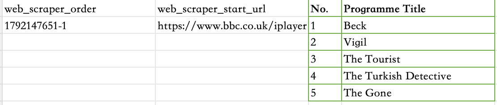

MA Digital Media | University of Leeds
Hello! I am a postgraduate student studying Digital Media at the University of Leeds. This is my first time creating a website!
In this week, I learnt how to create my first website by using HTML and CSS. This is my first time learning internet language, and also my first time formally building my personal website.
In this week, I used the Web Scraper Chrome extension to collect programme titles from BBC iPlayer. I successfully collected five programme titles and organised them into a dataset.

At first, I found it difficult to select the correct HTML elements. I accidentally selected images instead of programme titles, so the data preview was empty.
After adjusting the CSS selector, I successfully extracted the programme titles. This helped me understand how HTML structures affect web scraping.
This workshop also made me think about data ethics. Publicly available information does not always mean it can be reused without restrictions. We should consider privacy and website rules.